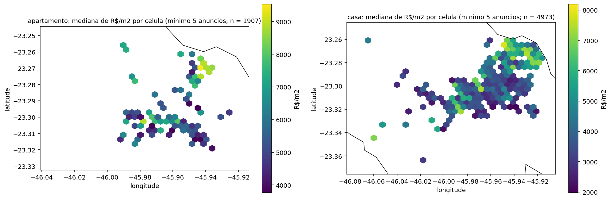
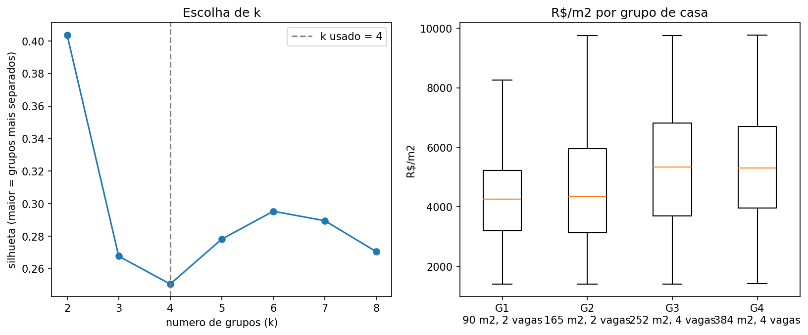
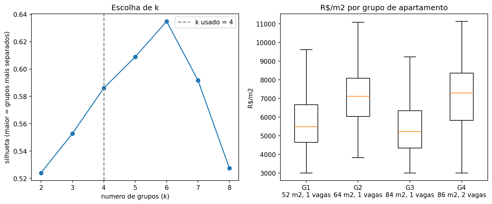
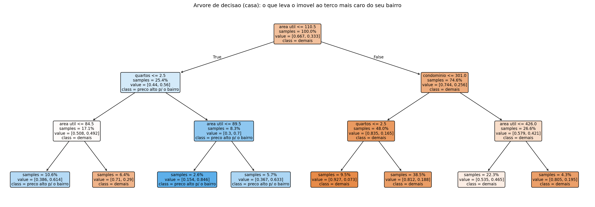
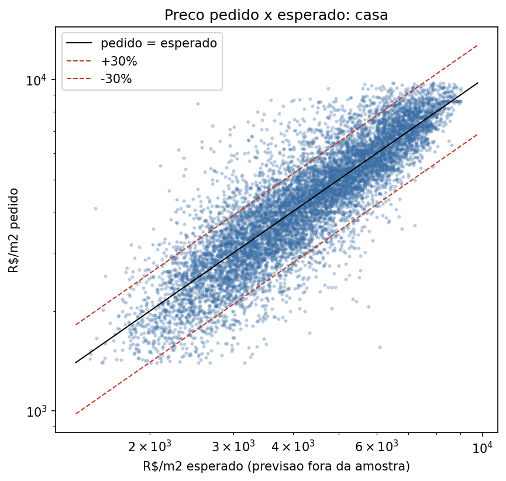
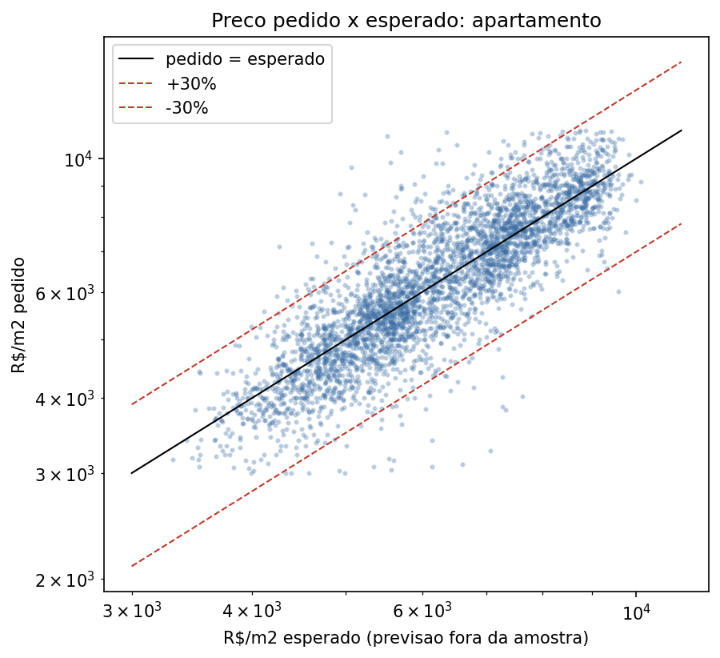

Coleta e mineração de dados de anúncios imobiliários por meio de web scraping
Pedro de Moraes MachadoInstituto Federal de São Paulo · Campus Jacareí
Apresentação A · Jacareí, SP
O problemaMilhares de anúncios, e ninguém consegue ler todos
- Os preços e as características dos imóveis estão nos portais de anúncios
- São muitos anúncios, que mudam toda semana
- Coletar e comparar à mão não escala
Solução: coletar automaticamente e minerar os dados.
Que características fazem um imóvel custar mais que os vizinhos do mesmo bairro?
O caminhoDo anúncio ao conhecimento, em 4 etapas
1 · Coleta
Robô em Selenium lê as páginas do ZAP e do VivaReal
Lê o JSON-LD que a própria página traz: 30 de 30 anúncios por página
2 · Limpeza
1.984 duplicatas removidas
Condomínio e IPTU absurdos viram "ausente"
3 · Mineração
Correlação, perfis, regras de associação, árvore de decisão e imóveis fora da curva
4 · Validação
Intervalos de confiança, dados que o método nunca viu e teste no tempo
Honestidade: a análise usa a base de 23.128 anúncios (março/2026) compartilhada pelo orientador. O meu robô funciona (amostra real validada, 42 testes), mas os portais bloquearam o acesso depois de várias rodadas de teste, e eu decidi não contornar o bloqueio.
Os dadosUma fotografia do mercado de Jacareí
23.128
anúncios coletados
(março/2026)
(março/2026)
10.254
casas depois da limpeza
3.992
apartamentos depois da limpeza
121
bairros com casas anunciadas

Preço mediano do m² por região (apartamentos à esquerda, casas à direita): o mapa já mostra que onde o imóvel está pesa muito.
O métodoComparar cada imóvel com o próprio bairro
R$/m² do anúncio
quanto o anunciante pede por metro quadrado
÷
Mediana do bairro
o preço "típico" do m² ali
=
Preço relativo
1,20 = 20% acima dos vizinhos
Chamamos de "preço alto para o bairro" o terço mais caro: casas com R$/m² ao menos 14% acima do bairro; apartamentos, 8%.
Assim, "tem piscina" não se confunde com "mora em bairro caro".
Resultado 1O que mais anda junto com o preço do m²
tecla Tab alterna
Correlação de Spearman com o R$/m². A barra preta é o intervalo de confiança de 95% (bootstrap).
Casas: a taxa de condomínio é o que mais anda junto com o preço (0,50), depois comodidades (0,34) e suítes (0,29).
Apartamentos: suítes (0,33), banheiros e vagas (0,26): o que indica padrão do imóvel.
Confiável? Os intervalos são estreitos e os valores se repetem nas duas metades dos dados. Mas é associação, não causa.
Resultado 2Perfis típicos de imóveis (K-means)


Casas de ~250 m² e 4 vagas: R$/m² mediano ~5.330. As de ~90 m²: ~4.250.
Apartamentos de 2 quartos com suíte (64 m²): R$/m² mediano ~7.100, bem acima dos de 52 m² sem suíte (~5.500).
Sinceridade: nas casas os perfis se sobrepõem (silhueta baixa). São perfis típicos, não segmentos separados.
Nos apartamentos os grupos são bem separados (silhueta 0,59) e estáveis (ARI 1,00).
Resultado 3Regras: o que costuma vir junto de "preço alto"
Lift = quantas vezes a chance de "preço alto" é maior que a média (que é de 33%).
Casas com piscina + segurança + armários planejados: 56% de chance de estar no terço mais caro do bairro.Apartamentos com área gourmet + varanda + 3+ quartos: 56% de chance de preço alto para o bairro.
ValidaçãoE se foi só sorte? Teste em dados que a regra nunca viu
Escolhidas numa metade, medidas na outra: o lift médio cai só de 1,67 para 1,50.Escolhidas numa metade, medidas na outra: o lift médio cai só de 1,73 para 1,52. Continua bem acima de 1: não é acaso de seleção.
Resultado 4Árvore de decisão: regras que dá para ler

71,6%
de acerto no teste (chutar a classe mais comum: 66,7%)
0,73
AUC no teste
Sinal real e modesto. Nos apartamentos a árvore não superou o acaso: por isso lá usamos as regras.
Resultado 5Imóveis fora da curva
Anúncios a até ±20% do preço esperado:
73%
das casas
86%
dos apartamentos
O modelo vê só características, bairro e coordenadas, e prevê sem ter visto o anúncio. Os extremos são candidatos a revisar (erro de cadastro, sobrepreço ou oportunidade), não prova de que está caro ou barato.


Resultado 6Prever o preço: o que mais pesa

0,80
R² nas casas
(teste no tempo)
(teste no tempo)
0,73
R² nos apartamentos
15%
erro médio (MAPE) nas casas
11%
erro médio (MAPE) nos apartamentos
DemonstraçãoPainel interativo do projeto
Painel do GitHub Pages: abas Mercado, Modelos, Sensibilidade, Séries temporais e Projeção. Precisa de internet. Clique fora do painel para voltar às setas.
Para fecharO que ainda falta
Limitações
- Retrato de um único mês
- São preços pedidos, não de venda
- Associação não é causa
- Coleta em volume parada por bloqueio do portal
Próximos passos
- Recoletas espaçadas para ver valorização no tempo
- Dados abertos de ITBI (preço de venda)
- Fotos e texto para medir estado do imóvel
- Parceria com os portais (API)
Obrigado!
Pedro de Moraes MachadoInstituto Federal de São Paulo · Campus Jacareí
Código e dados abertos: github.com/Pedrocs50/imob-analytics
Perguntas?
Extra (se perguntarem)Anúncio caro demora mais a sair?
| Tempo no ar | Casas: vs bairro | Aptos: vs bairro |
|---|---|---|
| até 30 dias | +1,2% | 0,0% |
| 91–180 dias | +0,7% | −0,1% |
| 1 a 2 anos | −1,5% | −1,6% |
| mais de 2 anos | −5,8% | −5,2% |
Correlação fraca: −0,06 (casas) e −0,03 (apartamentos).
Anúncios com mais de 2 anos estão ~6% abaixo do bairro. Provavelmente desatualizados, não "caros demais".
JECET 2026 · Pedro de Moraes Machado
Slides (clique para ir)
Teclas: → ou clique avança · ← volta · F tela cheia · G esta lista · P notas e cronômetro · Tab alterna Casas/Apartamentos · clique numa figura para ampliar